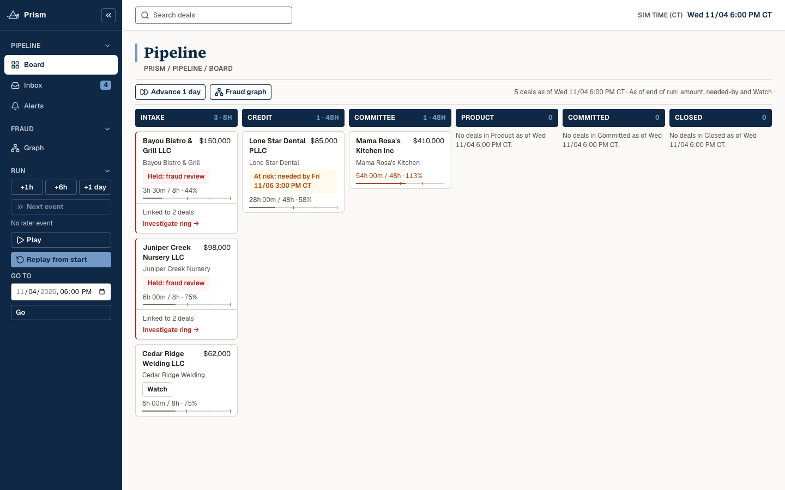
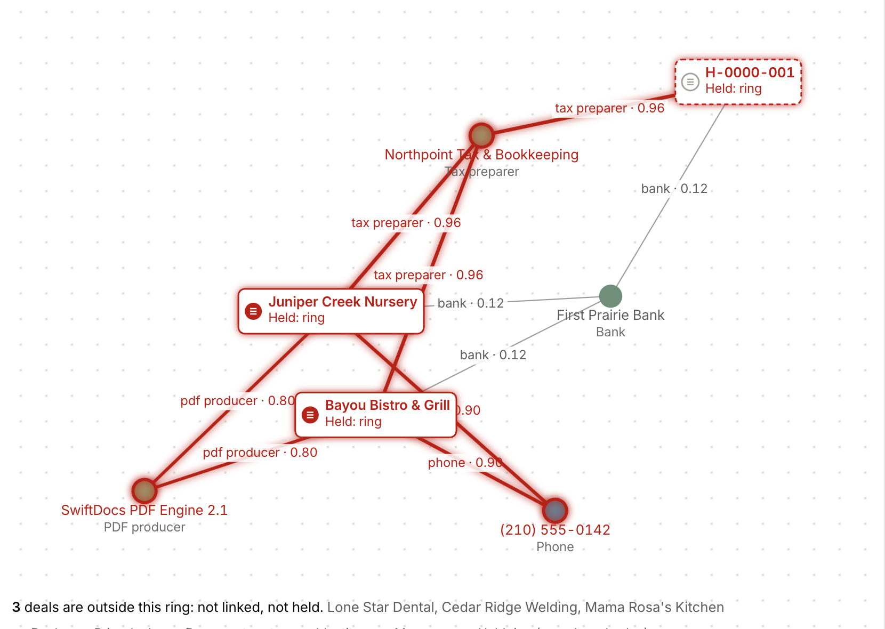
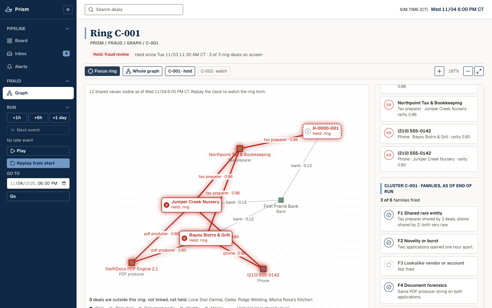
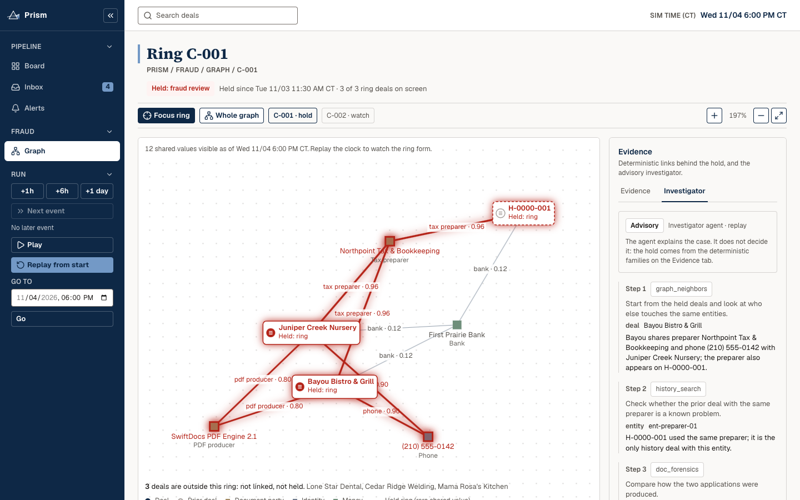
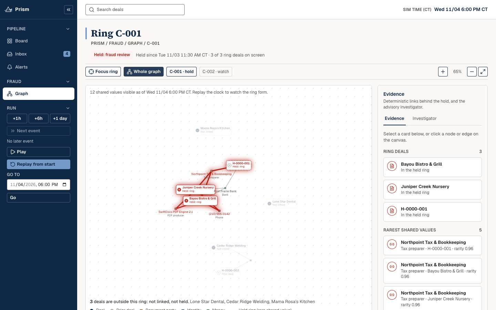

Prism

The problem

How it decides

Live demo, 60 seconds
Validation
| Test set | Used for tuning? | Result |
|---|---|---|
| Blind weekend drop, frozen engine, first run recorded before anyone opened the files | Never | [[BLIND_HELD]] of [[BLIND_TOTAL]] held, [[BLIND_FALSE_FLAGS]] false flags, first hold at stage [[BLIND_FIRST_STAGE]] |
| A year of history replayed in time order, last four months held out | No | [[HIST_FLAGS]] flags among [[HIST_GOOD_N]] good deals; after written review [[HIST_FALSE_POS]] false positives |
| Synthetic fraud families with honest twins, one family held out at a time | No | [[SYN_HELD_PCT]] of ring deals held, [[SYN_TWIN_PCT]] of twins flagged (bar: at least 70% held, at most 5% flagged) |
| Sample week, including deliberately odd honest borrowers | No | Held at stage [[SAMPLE_STAGE]]; history links [[SAMPLE_LINKS]]; false holds [[SAMPLE_FALSE_HOLDS]] |
| Earlier months of clean history | Yes, the only set | Where each family's threshold is set from clean deals |
Scorecard commit [[SCORECARD_COMMIT]]. Every number on this slide comes from a committed record; the sample week is not a fair fraud test because we studied its trick.
Nemotron

Generalization

Close
Repository [[REPO_URL]]
Demo video [[DEMO_VIDEO_URL]]
Tracks: Goldman Sachs "DealPilot — Move the Deal. Stop the Fraud." and NVIDIA Nemotron.